Analyses SQL
Les requêtes du projet
Pour chaque requête : l'objectif, le code SQL utilisé dans Access et une capture du résultat.
Requête A
Objectif de la requête
On veut vérifier les coordonnées des clients parisiens : liste triée par société
Code SQL
SELECT CodeCli, Societe, Contact, Adresse, Ville, CodePostal, Tel, MailCli
FROM Clientele
Where Ville like 'Paris'
Order by Societe;
Résultat dans Access
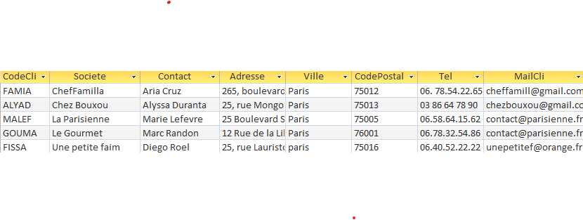
Requête B
Objectif de la requête
Quels sont les produits de provenance des Etats-Unis avec un cout de moins de 25€ ? On
veut les connaître noms et prix, nom du fournisseur et ville
Code SQL
SELECT Produit.NomProd,
Produit.CoutAchat,
Fournisseur.Societe,
Fournisseur.Ville
FROM Produit
INNER JOIN Fournisseur
ON Produit.NoFour = Fournisseur.NoFour
WHERE Fournisseur.NoPays IN (
SELECT Pays.NoPays
FROM Pays
WHERE Pays.PaysFR = 'Etats-Unis'
)
AND Produit.CoutAchat < 25;
Résultat dans Access
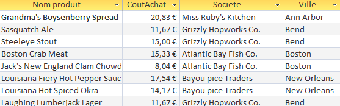
Requête C
Objectif de la requête
Quels sont les produits (avec fournisseur et pays de provenance) de catégorie viandes ou
poissons ayant un coût d’achat de plus de 50€ ?
Code SQL
SELECT Produit.NomProd,
Produit.CoutAchat,
Fournisseur.Societe,
Fournisseur.Ville
FROM Produit
INNER JOIN Fournisseur
ON Produit.NoFour = Fournisseur.NoFour
WHERE Produit.CodeCateg IN (SELECT CodeCateg
FROM Categorie
WHERE NomCateg LIKE 'Viandes' OR NomCateg LIKE 'Poissons*');
Résultat dans Access
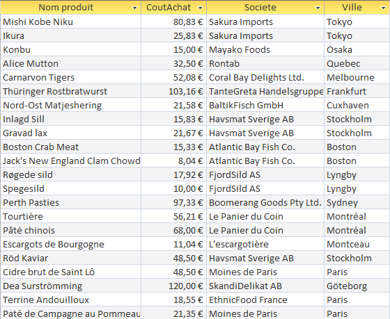
Requête D
Objectif de la requête
Quels fournisseurs proposent de la viande ou du poisson ?
Code SQL
SELECT NoFour, Societe, Ville
FROM Fournisseur
WHERE NoFour IN (SELECT NoFour
FROM Produit
WHERE CodeCateg IN (SELECT CodeCateg
FROM Categorie
WHERE NomCateg LIKE 'Viandes' OR NomCateg LIKE 'Poissons*'));
Résultat dans Access
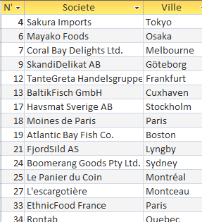
Requête E
Objectif de la requête
Quels fournisseurs proposent de la viande et du poisson ?
Code SQL
SELECT NoFour, Societe, Ville
FROM Fournisseur
WHERE NoFour IN (
SELECT NoFour
FROM Produit
WHERE CodeCateg IN (
SELECT CodeCateg
FROM Categorie
WHERE NomCateg LIKE 'Viandes'
)
)
AND NoFour IN (
SELECT NoFour
FROM Produit
WHERE CodeCateg IN (
SELECT CodeCateg
FROM Categorie
WHERE NomCateg LIKE 'Poissons*'
)
);
Résultat dans Access
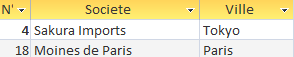
Requête F
Objectif de la requête
Quels sont les produits conditionnés dans du carton ou dans du verre ?
Code SQL
SELECT NomProd, CoutAchat
FROM Produit
WHERE QteParUnit LIKE '*carton*'
OR QteParUnit LIKE '*verre*';
Résultat dans Access
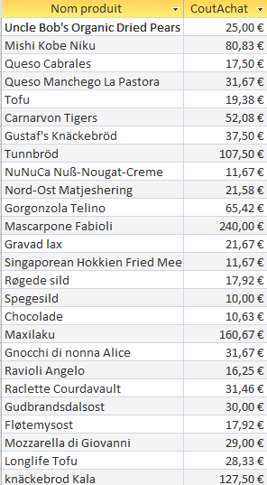
Requête G
Objectif de la requête
Donner les 3 dernières commandes du client Max Deschamps ?
Code SQL
SELECT TOP 3 [N° commande], DateCde
FROM Commande
WHERE CodeCli IN (
SELECT CodeCli
FROM Clientele
WHERE Contact LIKE 'Max Deschamps'
)
ORDER BY DateCde DESC;
Résultat dans Access
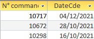
Requête H
Objectif de la requête
Quels fournisseurs ne proposent que des desserts ?
Code SQL
SELECT NoFour, Societe
FROM Fournisseur
WHERE NoFour IN ( SELECT NoFour
FROM Produit
WHERE CodeCateg IN ( SELECT CodeCateg
FROM Categorie
WHERE NomCateg LIKE '*Dessert*'))
AND NoFour NOT IN (SELECT NoFour
FROM Produit
WHERE CodeCateg IN (SELECT CodeCateg
FROM Categorie
WHERE NomCateg NOT LIKE '*Dessert*'));
Résultat dans Access
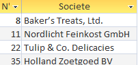
Requête I
Objectif de la requête
Quels fournisseurs hors France n’ont pas encore de produits au catalogue de Kdou ?
Code SQL
SELECT NoFour, Societe
FROM Fournisseur
WHERE NoFour NOT IN (SELECT DISTINCT NoFour
FROM Produit
ORDER BY NoFour)
AND NoPays NOT IN (SELECT NoPays
FROM Pays
WHERE PaysFR = 'France');
Résultat dans Access
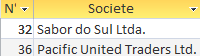
Requête J
Objectif de la requête
Pour optimiser les livraisons, on veut savoir quels couples de clients sont situés à Paris.
Code SQL
SELECT C1.CodeCli, C2.CodeCli
FROM Clientele AS C1
INNER JOIN Clientele AS C2
ON C1.CodeCli < C2.CodeCli
WHERE C1.Ville = 'Paris'
AND C2.Ville = 'Paris';
Résultat dans Access
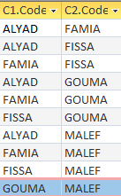
Requête 2
Objectif de la requête
Dans une réflexion en lien avec l’origine de ses produits : On veut comme indicateur le CA
total généré à ce jour avec les fournisseurs de l’UE ?
Code SQL
SELECT SUM(DetailCommande.Quantité * Produit.CoutAchat * Categorie.CoefMarge * (1 - DetailCommande.[Remise (%)])) AS CA
FROM (DetailCommande
INNER JOIN Produit ON Produit.RefProd = DetailCommande.[Réf produit])
INNER JOIN Categorie ON Produit.CodeCateg = Categorie.CodeCateg
WHERE Produit.NoFour IN (SELECT NoFour
FROM Fournisseur
WHERE NoPays IN (SELECT NoPays
FROM Pays
WHERE UE = 'Membre'));
Résultat dans Access

Requête 3
Objectif de la requête
Dans une réflexion en lien avec la santé : On veut comme indicateur le chiffre d’affaire
généré (montant total des ventes) annuel pour les catégories desserts ou boissons.
Code SQL
SELECT YEAR(Commande.DateCde) AS Annee,
SUM(DetailCommande.Quantité * Produit.CoutAchat
* Categorie.CoefMarge
* (1 - DetailCommande.[Remise (%)])) AS CA
FROM ((DetailCommande
INNER JOIN Produit
ON Produit.RefProd = DetailCommande.[Réf produit])
INNER JOIN Categorie
ON Produit.CodeCateg = Categorie.CodeCateg)
INNER JOIN Commande
ON DetailCommande.[N° commande] = Commande.[N° commande]
WHERE Categorie.NomCateg LIKE '*Dessert*'
OR Categorie.NomCateg LIKE '*Boisson*'
GROUP BY YEAR(Commande.DateCde)
ORDER BY YEAR(Commande.DateCde);
Résultat dans Access
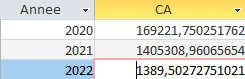
Requête 4
Objectif de la requête
Dans une réflexion en lien avec l’offre commerciale : Calcul de l’indicateur nombre de
produits carnés non commandés actuellement ?
Code SQL
SELECT COUNT(*) AS [Carné non commandé]
FROM Produit
WHERE CodeCateg IN (SELECT CodeCateg
FROM Categorie
WHERE NomCateg LIKE '*Viande*')
AND RefProd NOT IN (SELECT DISTINCT [Réf produit]
FROM DetailCommande
ORDER BY [Réf produit]);
Résultat dans Access
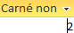
Requête 5
Objectif de la requête
Dans une réflexion sur le partenariat client : A-t-on des clients pilotes d’un réseau
partenaire ayant autant de commandes que les clients partenaires ?
Code SQL
requete enregistré sous NbCommandesClient
SELECT CodeCli, COUNT(*) AS NbCommandes
FROM Commande
GROUP BY CodeCli;
requete finale
SELECT Pilote.CodeCli AS Pilote, Pil.NbCommandes,
Partenaire.CodeCli AS Partenaire,
Part.NbCommandes
FROM ((Clientele AS Pilote
INNER JOIN Clientele AS Partenaire
ON Pilote.CodeCli = Partenaire.CodeCliPart)
INNER JOIN NbCommandesClient AS Part
ON Partenaire.CodeCli = Part.CodeCli)
INNER JOIN NbCommandesClient AS Pil
ON Pilote.CodeCli = Pil.CodeCli
WHERE Pil.NbCommandes = Part.NbCommandes;
Résultat dans Access
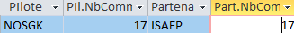